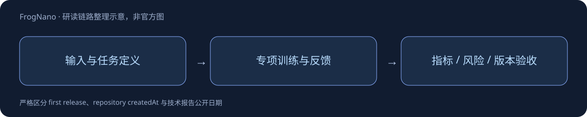

FrogNano
4B级仓库Agent，以TaskPilot合成并校准任务做纯RL；不使用强模型解题轨迹作行为蒸馏。
约4.66B；32层混合架构
约1500合成SWE任务
SWE-bench Verified Avg@3 61.5%

方法的关键
TaskPilot共同生成问题、参考patch和测试，先验证原仓库测试失败而参考patch通过，再用当前策略筛出既有成功也有失败的任务。五轮RL让任务难度跟随策略，Leaf五工具负责完整多轮环境交互。
可转化成什么实验
关键不是不使用教师，而是不蒸馏教师的解题轨迹：任务作者仍可生成环境。验证集选模与held-out测试必须分开，记录训练任务校准通过率、测试完备性和越权补丁。
资料阅读和发布日期边界以全文笔记为准。未读全文报告、日期待核实与许可矛盾均已明确写出，不虚构补齐。